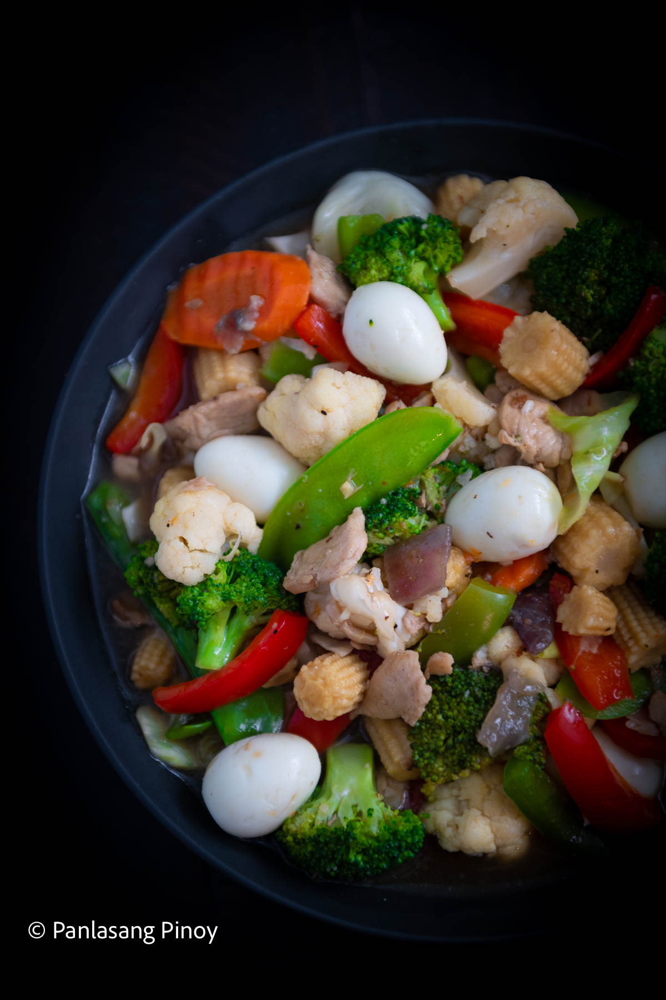

Chopsuey

Description
Chopsuey is a medley of readily available ingredients around the world
and produces a delicious and nutritious stir-fry meal.
Ingredients
- 113.4 g chicken breast sliced
- 1 piece Knorr Chicken Cube
- 136.5 g broccoli florets
- 150 g cauliflower florets
- 2 pieces carrot sliced crosswise
- 12 pieces snow peas
- 140 g cabbage chopped
- 1 piece red bell pepper sliced
- 1 piece green bell pepper sliced
- 12 pieces quail eggs boiled
- 396.89 g young corn
- 236.59 g water
- 5 cloves garlic chopped
- 1 piece onion sliced
- 2 tablespoons soy sauce
- 2 tablespoons oyster sauce
- 1 tablespoon cornstarch diluted in ¾ cup water
- 3 tablespoons cooking oil
- Salt and ground black pepper to taste